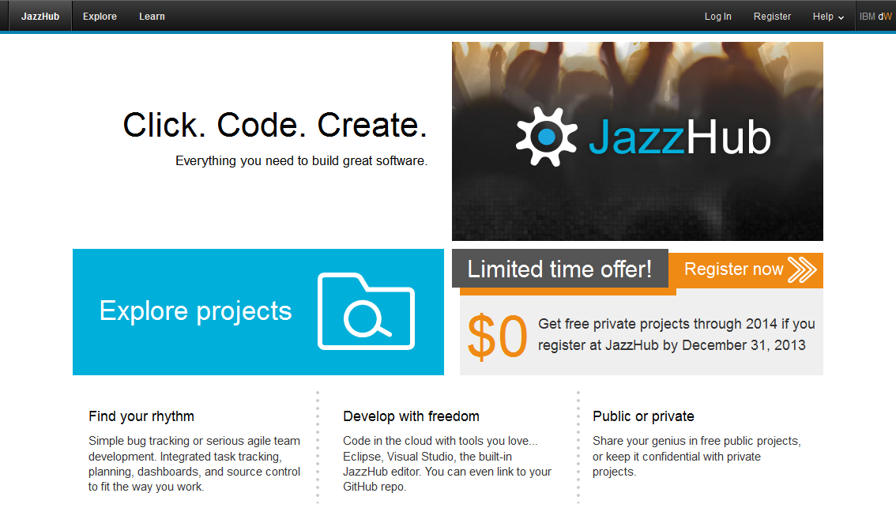
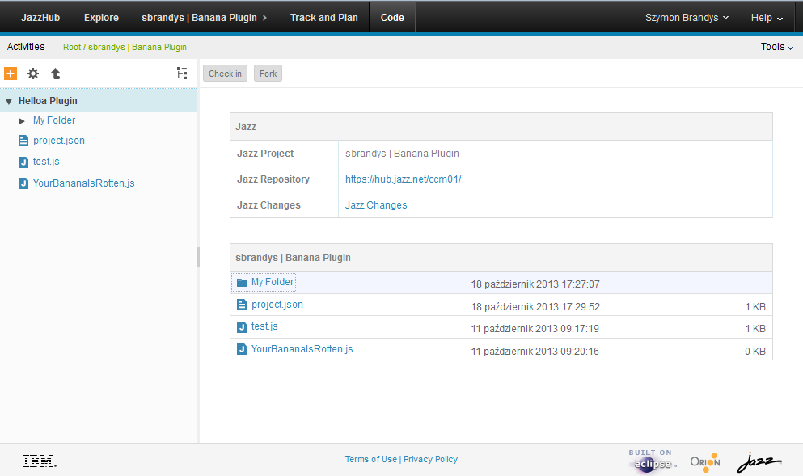
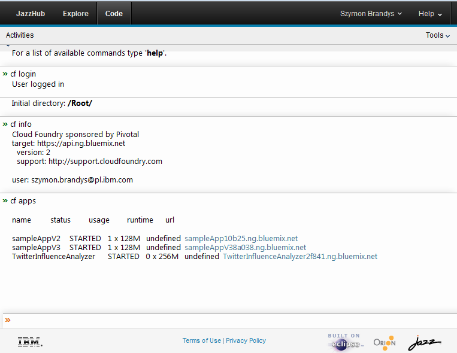
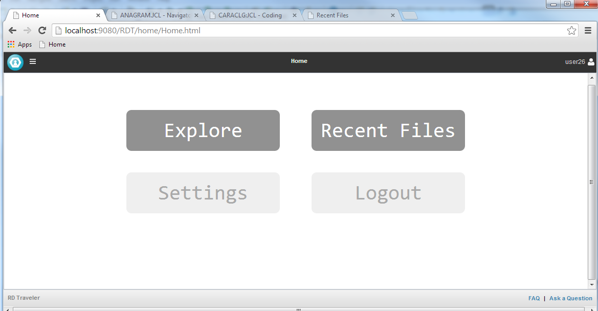

The Hitchhiker's Guide to Orion Solutions
The Open Source Orion Project
EclipseCon Europe - Nov, 2013
szbra.github.io / @szymonbrandys / @orionhub
Orion Project
Chapter 0
The Beginning
Somewhere in the cosmos, along with all the other cloud dev environemnts...
Inside IBM Orion was started by some of the Eclipse Team members from SWT & the Platform team
The goal was to begin working on a platform to support the growing initiatives for Cloud
As IBM is a founder of Eclipse, we wanted to leverage our experiences, investment, and the governance model
IBM made the initial contribution of Orion components in January, 2011
Why Orion?
Edit, Test, Deploy, Share
Chapter 1
So how can I extend or utilize Orion
Orion has many page templates by default
Provide initial functionality for developers
Product teams can start with existing pages
Orion provides extensibility points to plugins
Orion on Mobile

Extensible in the browser?
"plugins" live right in the page
Agnostic to where the plugin or code came from
No lock-in to plugin providers

Example JSBeautify Plugin
You provide html, javascript elements, from your site
In this case served up from a GitHub account
Chapter 2
Orion reusable components and shims
Mozilla thru Firefox integration
Embedded in the debugger and scratchpad

Embed Orion in web sites
Esprima examples from Ariya Hidayat
{kind=link}
Embedding in presentations!
Slightly meta here...
<section>
<h3>Embedding in presentations!</h3>
<h4>Slightly meta here...</h4>
<pre class="editor" data-editor-lang="js" data-editor-theme="css/nimbus.css" style="height:400px">
/*global require window console */
var express = require("express");
var app = express();
app.get('/', function(req, res) {
res.send('Hello from Node');
});
app.listen(3000);
</pre>
</section>
Available components and shims from Orion
Promises/A+ cancellation and progress, W3C URL, W3C Web Components, HTML Templates and Custom Elements, JavaScript APIs for OSGi
Orion Deferred, Orion HTML Templates Shim, Orion URI Templates, Orion URL Shim, Orion Plugin Registry, Orion Service Registry, Orion XHR Implementation, Orion Node Deferred File System Stand-alone Editor (follow stable links)
All under the EPL and EDL
Chapter 3
Orion Filesystems

WebDAV, GDrive, etc.
Chapter 4
Development Environments
Hewlett Packard
HP DevAnywhere, the entire software development lifecycle in the cloud
Node.js Orion server including editor, plugins, extensions

VMWare/Pivotal Scripted Editor
Desktop editor only (like Adobe Brackets)
scr [filename] - improved content assist through introspection supporting AMD loading

IBM JazzHub & BlueMix
Cloud ALM solution supporting hosted SCM and Deployment
{kind=link}
Start quickly. Simply.
No downloads required!
Create your first project in minutes
Work the way you want to work
Browser-based development using integrated Eclipse Orion technology provided by JazzHub
Full support for local development with Eclipse or Visual Studio
Built in support for Jazz Source Control
Connect to your existing GitHub projects
IBM JazzHub - Orion Projects view
{kind=link}
IBM JazzHub - Work items
IBM Cloud ALM solution supporting Jazz SCM and GitHub
{kind=link}
IBM JazzHub - Cloud Foundry
{kind=link}
IBM JazzHub - LDAP
{kind=link}
https://hub.jazz.net
IBM RD Traveler
z/OS Cloud based cobol development anywhere
{kind=link}
RD Traveler is currently a Tech Preview only
Developer Works community: https://www.ibm.com/developerworks/community/groups/community/rdtraveler/
Cloudfier.com
Business centric solution for Cloud apps
{kind=link}
Maqetta
Visual authoring of HTML5 user interfaces
{kind=link}
Flower


See Cristian SPIESCU talk tomorrow (Thu) 14:15
Chapter 5
Server Side
Orion Java Server
Orion is available as a stand-alone Java based server or WAR file that takes 2 minutes to setup a multi-user cloud based development platform
Those wishing to extent the Java server directly can write Eclipse plugins to surface RESTful APIs to the client

Orion Node.js Server
Also available as a Node.js based application, with less functionality, but full editor, search capabilities, node start/stop/debug and npm commands
Very portable and great performance
Deploy anywhere Node is installed
>npm install orion>npm start orion

Need another server platform? Write one
Chris McGee working on a Go Development platform
Wrote the file system and search API in Go
Added extension plugins for build and format
{kind=link}
Chapter 6
Orion-based tools
A globally accessible web tool
i18N built in the core, the UI and in the plug-ins
Text editor capable of both Double Byte and working on Bidi
Working to be fully accessible
Orion provides a plugin for Externalizing strings to bundles
{kind=link}
Marketplace
https://marketplace.orionhub.org{kind=link}
Demo
Chapter 42
The Answer
The Answer to the Great Question... Of Life, the Cloud and Everything... Is...
Find out more
Read our blog at Planet Orion
Check out the Orion BUZZ
Lots of information in the Orion Wiki
Subscribe and contribute to the Orion Dev List
So long, and thanks for all the JavaScript